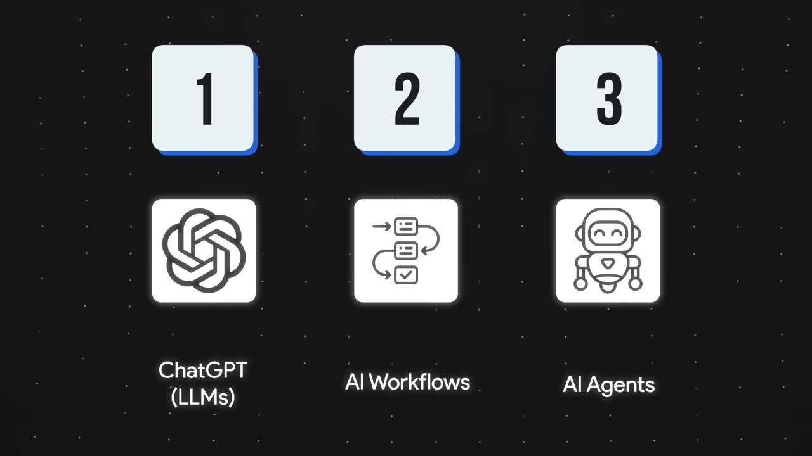
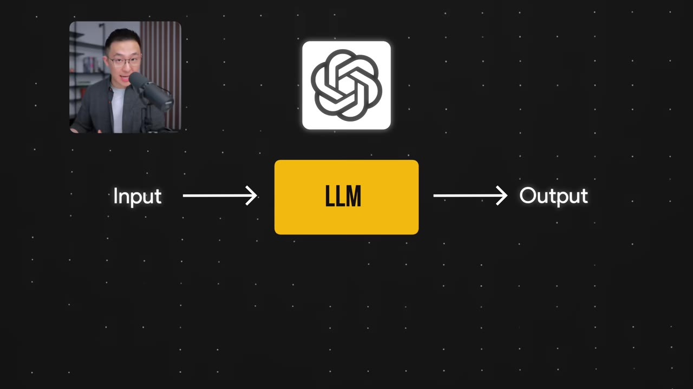
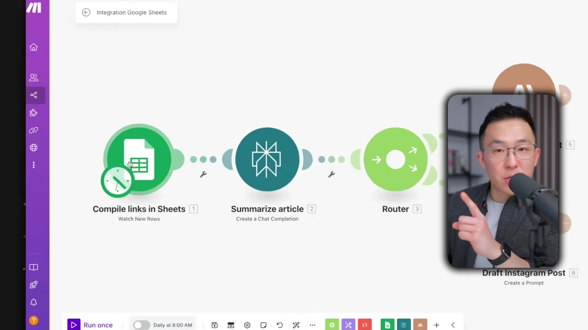
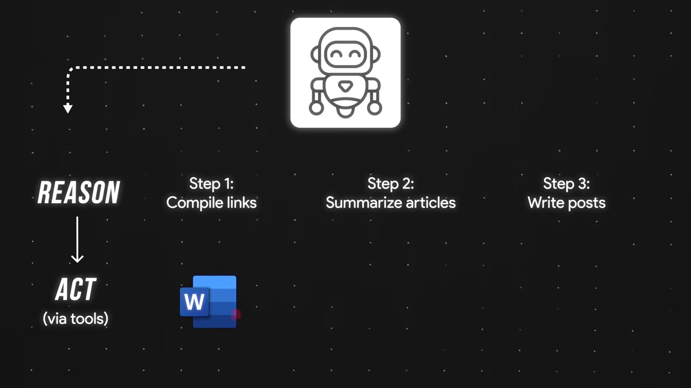
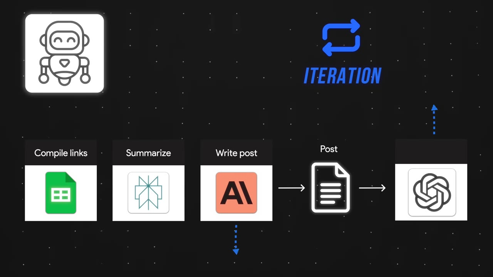
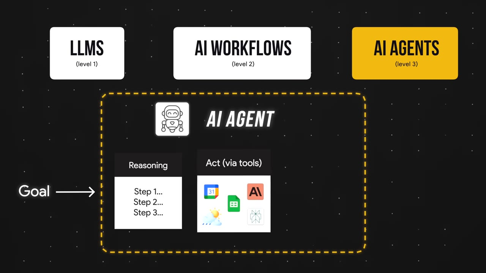

AI Agents, Clearly Explained (for Non-Technical People)
Most explanations of AI agents are either too technical or too basic. Jeff Su's is built for people who use AI tools but have no technical background — a simple three-level path from chatbots to workflows to agents, with the one sentence that actually separates an "agent" from everything else.
Creator: Jeff SuRuntime: 10 minVideo published: April 8, 20254.4M views when summarized
A non-technical three-level path, built on tools you already use: LLMs → AI workflows → AI agents.
Level 1 (LLMs like ChatGPT/Gemini/Claude): input → output from training data. Two limits — no access to your private/proprietary info, and they're passive (they wait for a prompt).
Level 2 (AI workflows): a human wires a predefined path (check the calendar, call a weather API). RAG — 'look things up before answering' — is just a type of workflow. However many steps, if a human is the decision-maker, it's still a workflow.
Level 3 (AI agents): the one change is that the human decision-maker is replaced by an LLM that reasons and acts via tools (the ReAct framework) — and iterates autonomously, e.g. adding an LLM to critique its own output until it's good.
The litmus test: give it a goal; if the LLM decides the steps and tools (not you), it's an agent.
01 · The map
Three levels, one path
The whole video follows a simple 1-2-3 progression, building on things you already understand rather than drowning you in jargon.

The path: (1) ChatGPT/LLMs → (2) AI workflows → (3) AI agents. Master each level and the scary terms (RAG, ReAct) become obvious.00:00:50
02 · Level 1: LLMs
Input in, text out
Chatbots like ChatGPT, Gemini, and Claude are apps built on large language models — great at generating and editing text. You give an input; the model returns an output from its training data.

The basic loop. Ask it to draft an email and it nails it — but ask "when's my next coffee chat?" and it fails.00:01:28
Two traits to rememberLLMs have limited knowledge of proprietary/personal info (it can't see your calendar), and they're passive — they wait for your prompt, then respond. Both limits are what the next levels fix.
03 · Level 2: AI workflows
A human wires the path
Tell the LLM to always do certain steps — "check my Google Calendar before answering" — and you've built a workflow. Add more: hit a weather API, speak the answer aloud. But it can only follow the predefined path (the "control logic").

A real one (make.com): compile news links in Sheets → summarize with Perplexity → draft a LinkedIn post with Claude → run daily at 8am.00:04:22
RAG is just a type of AI workflow… a process that helps AI look things up before they answer.— Jeff Su
The tell: no matter how many steps, if you are the decision-maker — and you manually rewrite the prompt when the output is off — it's still a workflow.
04 · Level 3: AI agents
Reason + act = ReAct
Here's the single most important idea in the video: the workflow becomes an agent when the human decision-maker is replaced by an LLM. That LLM must do two things — reason (think through the approach) and act (use tools).

ReAct in one picture: the agent reasons about the best way to compile/summarize/write, then acts via the right tools — deciding for itself instead of following your script.00:06:38
The one massive change for this AI workflow to become an AI agent is for me, the human decision maker, to be replaced by an LLM.— Jeff Su
05 · The third trait
Agents iterate on themselves
Remember manually rewriting the prompt to make a post funnier? An agent does that loop autonomously — e.g., adding a second LLM to critique its own draft against best practices, and repeating until the criteria are met.

The iteration loop: instead of a human reviewing each pass, a "critique bot" judges the output and the agent revises until it's good. (Andrew Ng's "skier" vision demo shows a real agent reasoning about footage, then acting to find and tag the right clips.)00:07:26
06 · The litmus test
Who's the decision-maker?
The clean recap: Level 1, input → output. Level 2, you program a path that may pull from external tools. Level 3, you give a goal — and the LLM reasons, acts via tools, observes the interim result, decides whether to iterate, and returns the final output.

The one trait that defines an agent: the LLM — not you — is the decision-maker in the loop.00:09:43